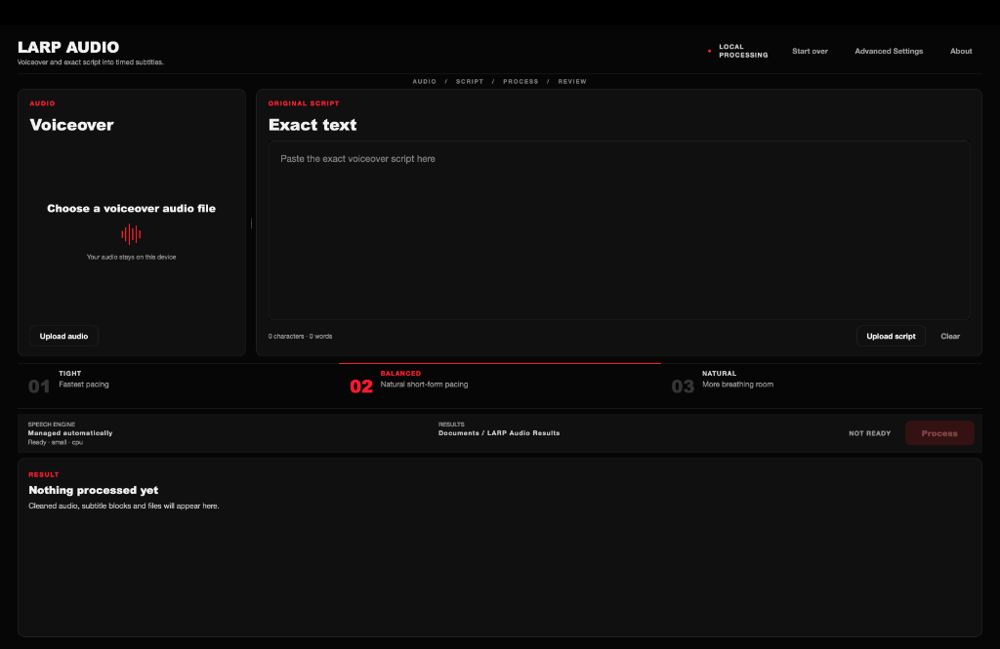

LOCAL VOICEOVER WORKFLOW
Clean voiceovers.
Perfectly timed subtitles.
LARP Audio removes excessive pauses from AI-generated voiceovers, synchronizes subtitles to your exact script and exports a clean WAV file with a ready-to-use SRT.

01
Remove pauses
Cleans excessive silence without changing the spoken words.
02
Sync exact script
Uses speech recognition for timing while preserving the original script.
03
Export instantly
Creates a cleaned WAV file and synchronized SRT subtitles.
Your script and audio stay on your computer.
Local processing. No media uploads.